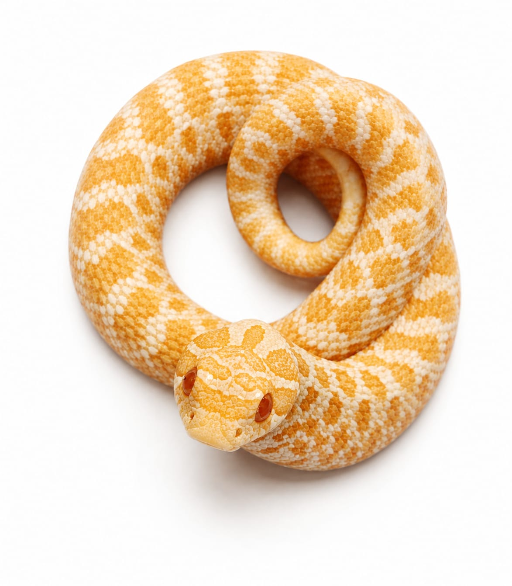

Especie: Western Hognose (Heterodon nasicus)
Sexo: Macho
Morph: Albino
Año: 2025
Peso: 36 g
Origen: CODE
Estado: Juvenil
Gen recesivo de albinismo (fase amelánica).
Forma parte del Archivo Genético CODE como registro documental permanente.